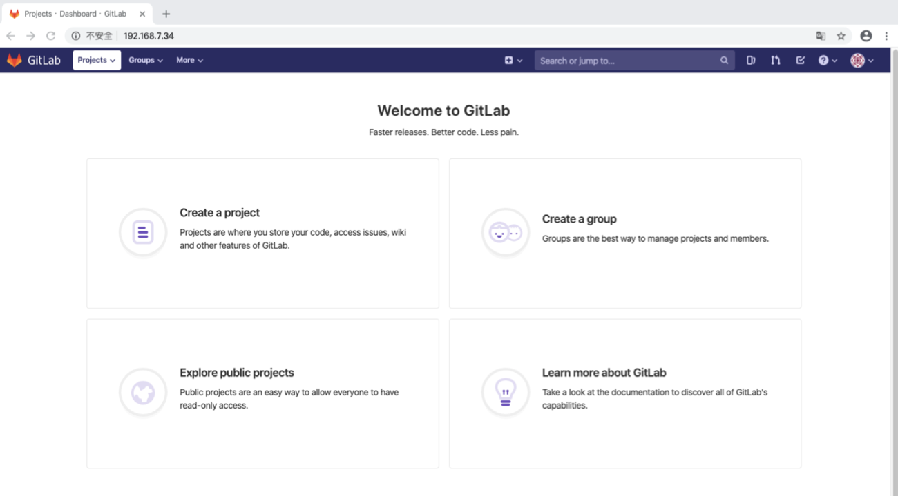
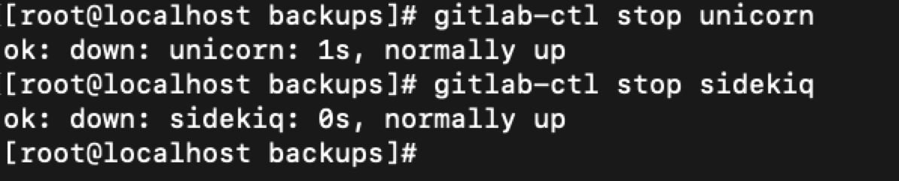

1. 安装
1.1 配置yum源
vim /etc/yum.repos.d/gitlab-ce.repo
填写以下内容：
[gitlab-ce]
name=Gitlab CE Repository
baseurl=https://mirrors.tuna.tsinghua.edu.cn/gitlab-ce/yum/el$releasever/
gpgcheck=0
enabled=1
1.2 更新本地yum缓存
yum makecache
1.3 安装GitLab社区版
yum install gitlab-ce #自动安装最新版本
注：若需安装指定版本，则添加版本号即可，如下
yum install gitlab-ce-x.x.x
安装完成
2. 开启GitLab
gitlab-ctl start
3. GitLab常用命令
gitlab-ctl start # 启动所有 gitlab 组件；
gitlab-ctl stop # 停止所有 gitlab 组件；
gitlab-ctl restart # 重启所有 gitlab 组件；
gitlab-ctl status # 查看服务状态；
gitlab-ctl reconfigure # 启动服务；（重新加载配置文件，在GitLab初次安装后可以使用，但是在业务环境中不可随意使用，reconfigure会把一些过去的config还原，导致修改的端口以及域名等都没有了。）
vim /etc/gitlab/gitlab.rb # 修改默认的配置文件；
gitlab-rake gitlab:check SANITIZE=true --trace # 检查gitlab；
sudo gitlab-ctl tail # 查看日志；4. GitLab使用
4.1 访问GitLab
在浏览器的地址栏中输入服务器的公网IP 192.168.7.34/ 即可显示GitLab的界面。
注：若无法访问，则可以使用ps -ef命令查看服务是否正常启动。
若未启动， 则重新开启，若仍然启动不了，则可使用gitlab-ctl reconfigure（仅限初始环境下使用）命令启动服务， 然后再访问GitLab。
4.2 登陆gitlab
首次登录会强制用户修改密码，已设置为 123456。
密码修改成功后，输入用户名和密码进行登录，如果无法登陆，先去注册。
登陆成功后界面如下：

4.3 创建Project
第一步 点击 create a project
第二步 创建工程
创建完成如下
- 第三步 克隆工程，验证工程是否获取成功
$ git clone http://192.168.7.34/szl/testproject.git
Cloning into 'testproject'...
Username for 'http://192.168.7.34': szl
Password for 'http://szl@192.168.7.34':
remote: Enumerating objects: 3, done.
remote: Counting objects: 100% (3/3), done.
remote: Total 3 (delta 0), reused 0 (delta 0)
Unpacking objects: 100% (3/3), done.
$ cd testproject
$ ls
README.md
4.4 修改域名
修改之前，显示的默认设置域名。
- 第一步 修改host和port
由于没有DNS服务器，无法进行域名解析，所以需要将域名修改为主机名，进入终端修改一下文件即可。
vim /opt/gitlab/embedded/service/gitlab-rails/config/gitlab.yml
修改host和port，可参考下面内容
## GitLab settings
gitlab:
## Web server settings (note: host is the FQDN, do not include http://)
## host: gitlab.example.com
host: 192.168.7.34
port: 80
https: false- 第二步 重启GitLab
gitlab-ctl restart
- 第三步 刷新GitLab页面查看是否修改成功

4.5 删除Project
第一步 点击General，找到Advanced，点击Expand
第二步 滚动到底部，点击Remove project
第三步 在输入框中输入对应工程名称，点击Confirm
如果提示如下内容，表明工程已删除成功
Project 'szl / testproject' is in the process of being deleted.如图所示
第四步：在浏览器输入对应工程路径，验证删除是否成功
5. Gitlab备份与恢复
5.1 GitLab创建备份
gitlab-rake gitlab:backup:create
使用以上命令会默认在 /var/opt/gitlab/backups 目录下创建一个名称类似为1577333013_2019_12_26_12.6.0-ee_gitlab_backup.tar的压缩包, 这个压缩包就是Gitlab整个的完整部分, 其中开头的1577333013_2019_12_26_12.6.0是备份创建的日期。
[root@localhost backups]# pwd
/var/opt/gitlab/backups
[root@localhost backups]# ls
1577333013_2019_12_26_12.6.0-ee_gitlab_backup.tar5.2 删除project
删除一个已经备份的工程，操作步骤按照 4.5 删除Project
5.3 GitLab恢复
- 第一步 停止相关数据连接服务
gitlab-ctl stop unicorn
gitlab-ctl stop sidekiq
如图所示：

- 第二步 从1577333013_2019_12_26_12.6.0-ee编号备份中恢复
gitlab-rake gitlab:backup:restore BACKUP=1577333013_2019_12_26_12.6.0-ee
5.4 启动Gitlab
gitlab-ctl start
5.5 查看GitLab页面中是否恢复project
刷新之前删除的工程，如果工程恢复，表明备份已恢复成功。
6. Gitlab 修改备份文件默认目录
可以通过修改/etc/gitlab/gitlab.rb来修改默认存放备份文件的目录。
vim /etc/gitlab/gitlab.rb
修改下面内容：
gitlab_rails['backup_path'] = "/mnt/gitlab/backup" >>修改文件路径即可修改完成之后使用gitlab-ctl reconfigure命令重载配置文件即可。
注意：因为涉及到重新加载配置，reconfigure会把一些过去的config还原，导致修改的端口以及域名等都没有了。建议在服务安装之后即修改仓库默认路径，若后期业务中修改此项，会对业务造成一定的影响。若后期业务需修改此项，请提前做好准备，然后再修改配置文件中的相应参数。
重载配置文件之后会发现/mnt/gitlab/backup的权限发生变化
7. 修改仓库的默认路径
7.1 修改配置文件，找到git_data_dirs
vim /etc/gitlab/gitlab.rb
# git_data_dirs({
# "default" => {
# "path" => "/mnt/nfs-01/git-data"
# }
# })
git_data_dir "/data/gitlab" >>此处添加自定义的仓库路径，目录需提前创建在git_data_dir下面添加一句git_data_dir "/data/gitlab"
7.2 停止当前gitlab，重新加载配置
注意：仓库路径的修改会导致已有project的丢失，请提前进行备份，具体备份操作请参考上文“GitLab的备份与恢复”，然后再修改配置文件中的相应参数。
gitlab-ctl stop
gitlab-ctl reconfigure
7.3 重新加载
会发现在/data/gitlab目录下多出一个repositories目录
7.4 最后启动gitlab即可
gitlab-ctl start
8. GitLab服务端口修改
yum方式安装的GitLab的配置文件路径为/var/opt/gitlab/nginx/conf（其他安装方式的配置文件路径不一定相同，请自行查找）。
8.1 修改配置文件
vim /var/opt/gitlab/nginx/conf/gitlab-http.conf
###################################
## configuration ##
###################################
upstream gitlab-workhorse {
server unix:/var/opt/gitlab/gitlab-workhorse/socket;
}
server {
listen *:8888; >> 此处修改端口即可8.2 重启服务
gitlab-ctl restart
8.3 访问ip:port，查看页面是否正常
注意
- 端口修改之后，project中的IP也需要相应的修改，请参考上文“修改域名”，修改port参数即可。
- 执行gitlab-ctl reconfigure命令后，配置文件会重新加载，服务端口会重新恢复为默认端口80，所以，如需修改端口，请在上述两个步骤之后进行操作。
- Gitlab部署中注意端口不要冲突。
9. 其他博客
Centos 7搭建Gitlab服务器超详细
https://blog.csdn.net/duyusean/article/details/80011540
配置ssh的步骤：
https://blog.csdn.net/xyzchenxiaolin/article/details/51852333
有时不仅需要修改external_url的端口，还要修改unicorn
https://blog.csdn.net/fengchao2016/article/details/77851234
修改git文件存放路径
https://www.cnblogs.com/dieyaxianju/p/7586203.html
设置发送邮件的功能
参考链接：http://www.fayfox.com/post/39.html
邮箱配置官方文档：https://docs.gitlab.com/omnibus/settings/smtp.html#mandrill
安装后的测试：https://blog.csdn.net/yelllowcong/article/details/79939589
如果测试不成功，请参照这篇文章：https://ruby-china.org/topics/20450（要将身份验证帐号和发件人保持一致。）